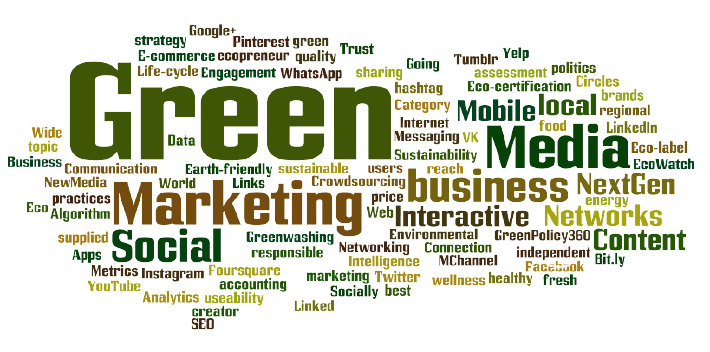

Green Washing
L'inganno non ripaga
Cosa è il Green Washing?
Il Green Washing non è un fenomeno nuovo. Questo termine veniva già usato negli anni novanta quando grandi aziende americane chimiche petrolifere, cercarono di spacciarsi come eco-friendly proprio per distogliere l'attenzione dell'opinione pubblica dall'inquinamento che stavano causando.
Con questo termine si indica quindi la tendenza di molte aziende di autoproclamarsi sensibili ai temi ambientali, dichiarando di seguire un processo lavorativo sostenibile attraverso degli espedienti solo apparentemente green, ma che distolgono l'attenzione da altre dinamiche aziendali poco green. Per capirci, fare Greenwashing significa anche aderire a trovate di marketing che cercano di nascondere nell'armadio scheletri importanti. Un esempio ormai molto comune? Creare come gadget aziendale una bottiglietta per evitare lo spreco di plastica, quando magari quotidianamente il processo produttivo non evita assolutamente lo spreco e l'accumulo di tali risorse.
Come riconescere chi la pratica
Il caso più diffuso è quello di evidenziare una singola caratteristica di un prodotto senza affrontare altri importanti aspetti correlati alle politiche aziendali. Si può citare, a titolo di esempio, la campagna estiva lanciata da Nestlé: la multinazionale con sede a Vevey ha pubblicizzato gelati dalle confezioni più green, ma che dire della sua sostenibilità complessiva? Servirebbe molto di più, nel caso di una realtà economica così importante, per guadagnarsi il fatidico “bollino green”.
Un’altra pratica molto comune è negare informazioni a supporto di un’affermazione: si dice che il prodotto è verde, ma non si spiega esattamente rispetto a cosa e non si forniscono dati quantitativi, frustrando così il bisogno di conoscenza dell’acquirente. C’è poi chi “autocertifica” le proprie credenziali green, mentre sarebbe opportuno ricorrere a enti esterni e imparziali. Non manca chi enfatizza iniziative green irrilevanti rispetto all’impatto socio ambientale complessivo dell’azienda stessa, riuscendo allo stesso tempo a distrarre l’attenzione del consumatore Si arriva infine all’estremo di utilizzare elementi grafici e comunicativi che richiamano una sostenibilità di fatto inesistente.
Supportiamo chi ci tiene davvero all'ambiente!
Agli amanti della sostenibilità non resta che orientarsi verso chi fa della trasparenza il proprio marchio di fabbrica. Chi è veramente green non ha paura di fornire informazioni facilmente comprensibili ed esaurienti; non teme un ente di certificazione esterna; non ha bisogno di campagne di grande impatto mediatico ma di ridotta rilevanza ambientale.
Insomma, gli strumenti per smascherare i professionisti del greenwashing ci sono: impariamo a usarli per dare fiducia soltanto a chi, per serietà e visione complessiva, dimostra di meritarla veramente.